纯粹
精研代码，匠造体验
精研代码，匠造体验
细节雕琢，始终如一
快速迭代，精确交付
携手伙伴，共铸成长
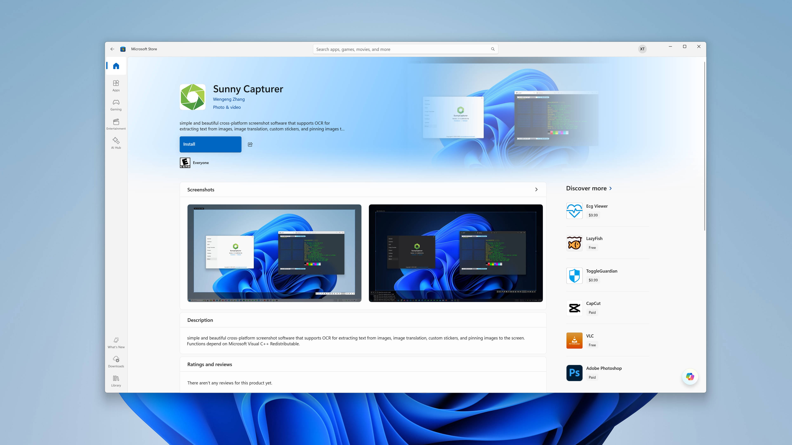
简洁且漂亮的跨平台截图软件，支持离线 OCR、图片翻译、屏幕录制、GIF、贴图和钉图等功能
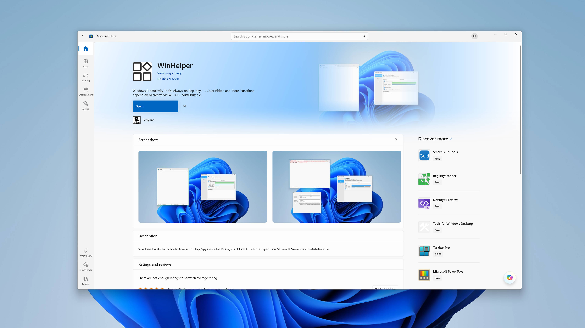
Windows 生产力工具箱: 指定窗口置顶, 窗口名侦探, 取色器，放大镜，图片翻译，离线提取文字
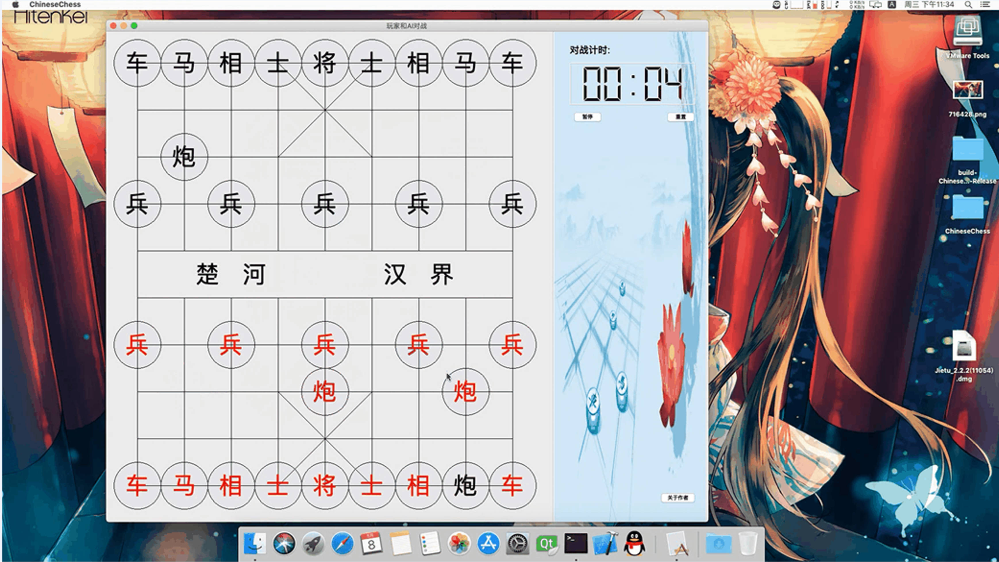
基于 QT 的跨平台网络象棋对战演示: Chinese Chess，也称『Xiangqi』『中国象棋』
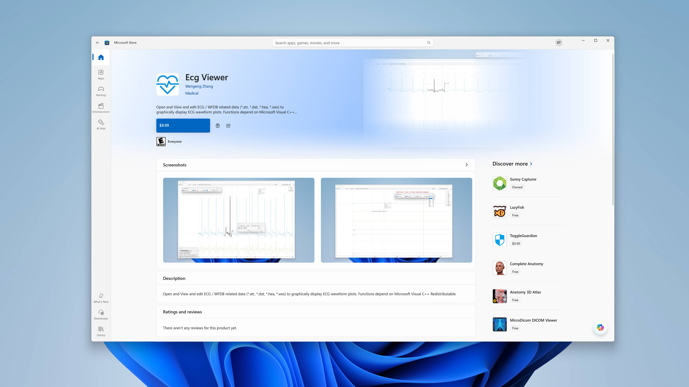
简单且漂亮的 ECG 查看和分析 WFDB 数据的医疗健康软件，支持跨平台
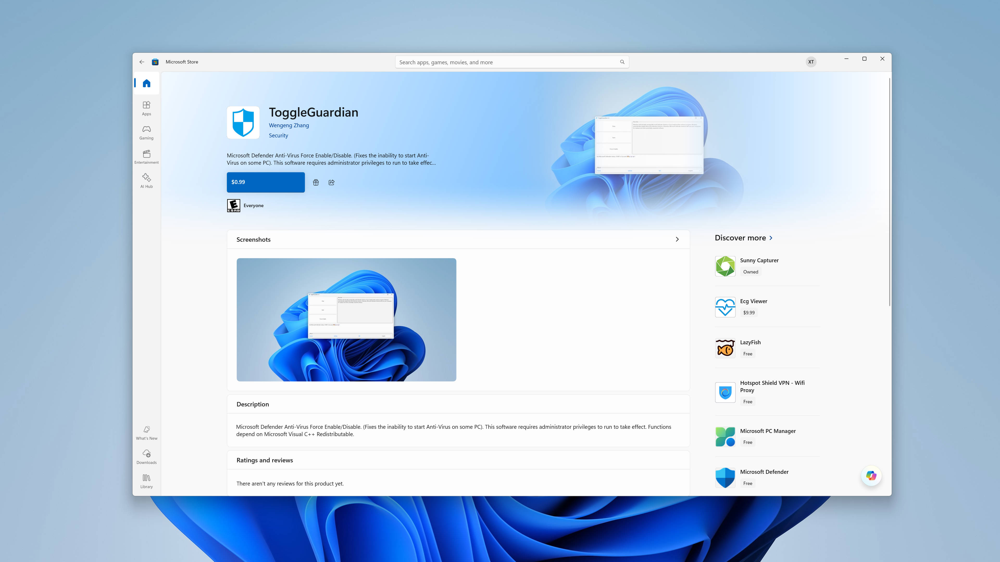
ToggleGuardian: Windows Defender Close. | 亦极简的电脑管家，一键关闭 Microsoft Defender Anti-Virus.
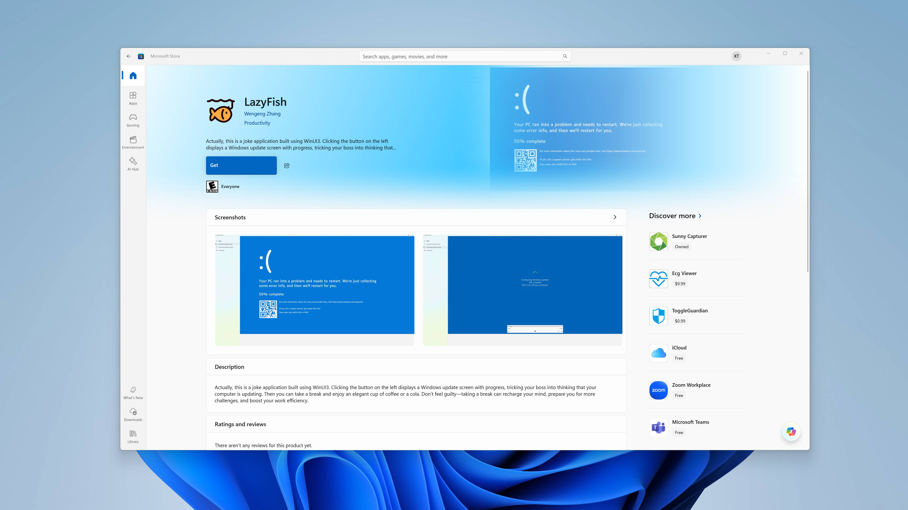
假装电脑蓝屏或系统更新，让自己摸个鱼，小憩一会.
实时双语字幕，支持麦克风和扬声器同时翻译
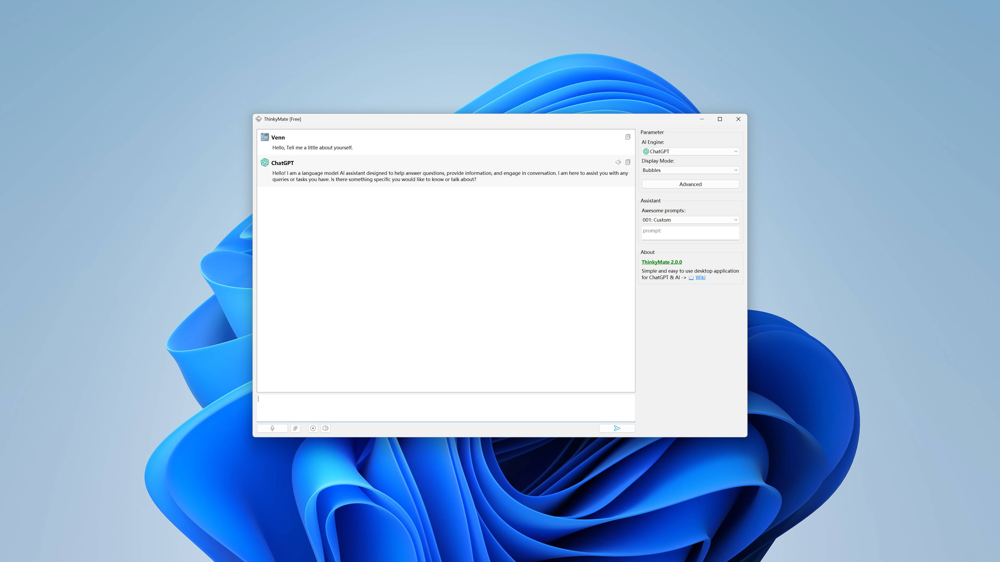
洁且易用的 ChatGPT/星火大模型 & AI 的跨平台客户端
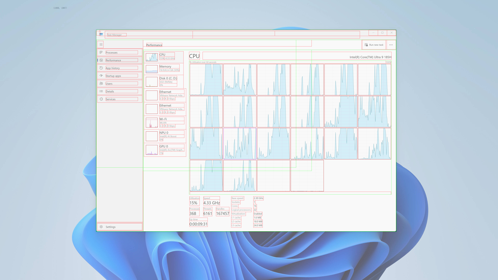
使用 Qt + UIA 实现捕捉任意窗口对象树
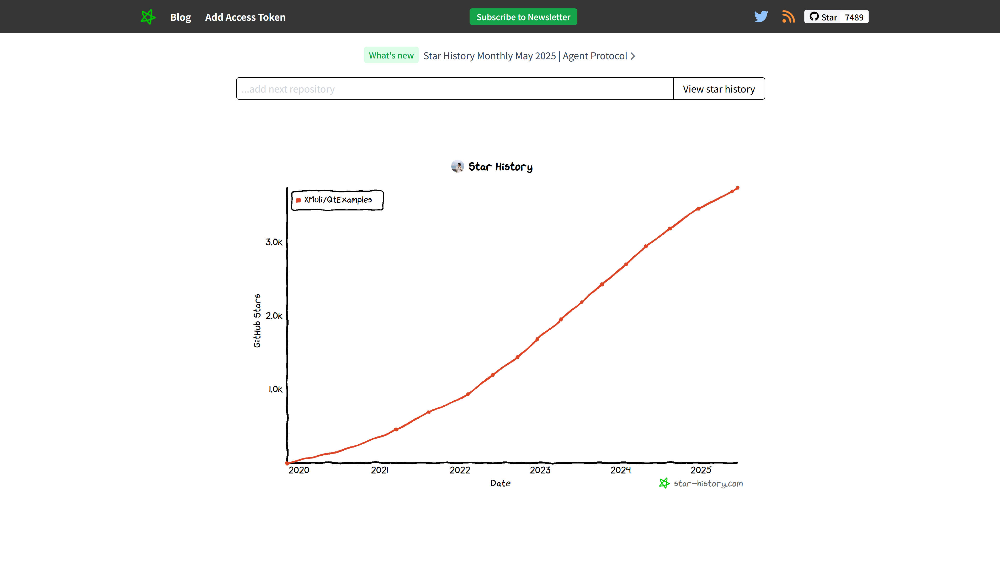
Qt之GUI控件使用/网络/架构原理/运行机制理解；DTK重绘控件方式的框架解析；IDE技巧之Visual Studio/Qt Creator等
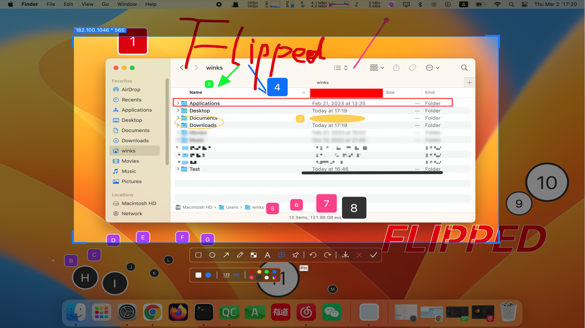
FLIPPED 跨平台的截图贴图软件 -- MACOS / WINDOWS / LINUX 运行演示
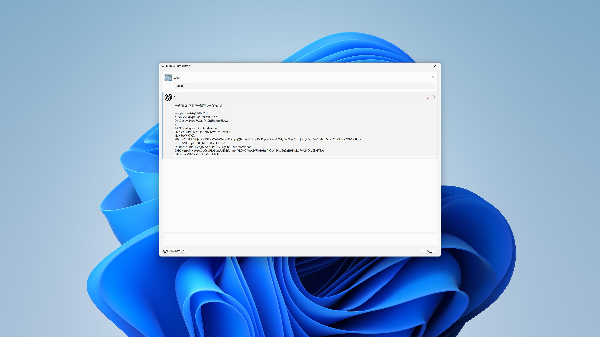
自定义 QT 复杂控件，气泡聊天的消息展示的效果，且自适应大小。
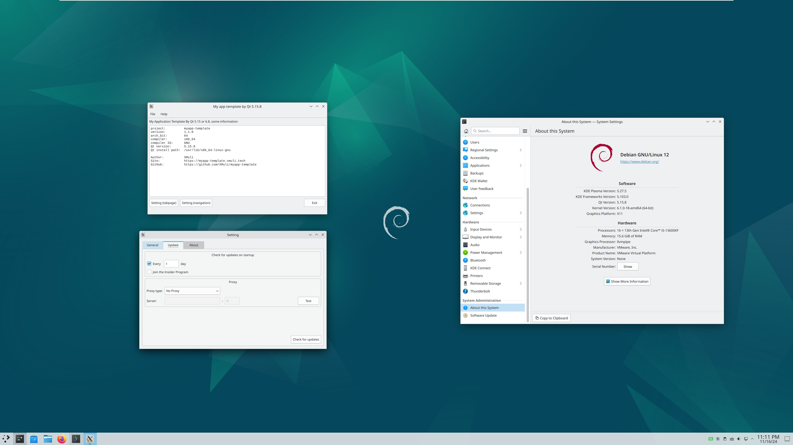
一款通用的最小窗体的桌面应用程序模板示例，帮助工程师构建一个通用且完整的桌面应用程序，均支持 Qt 5/6 且跨平台
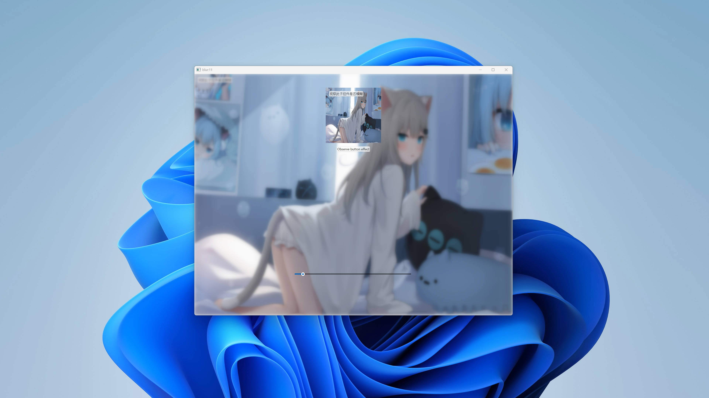
使用 Qt 实现亚克力、云母和透明磨砂效果的窗口思路和解决方案 | 跨平台方案

基于 WmiTool 使用 QT6 写了一个界面 GUI 的 Ladm-Wmi-Gui-Qt
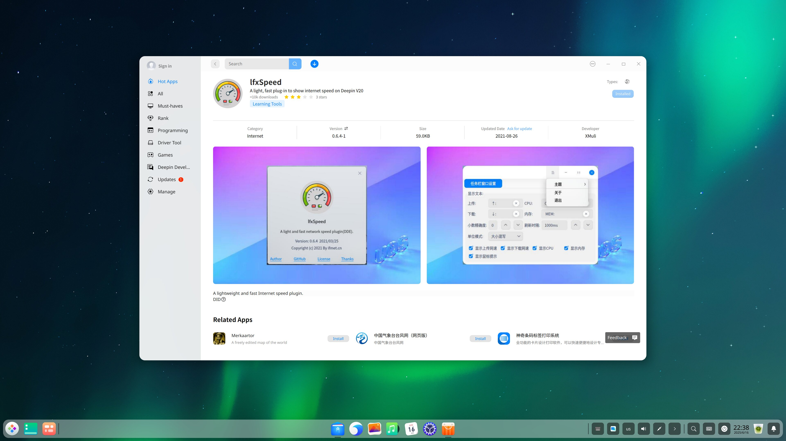
一款轻量的监测和显示网速的任务栏插件，支持原生国产操作系统 UOS / Deepin V20.9，且上架官方应用商城
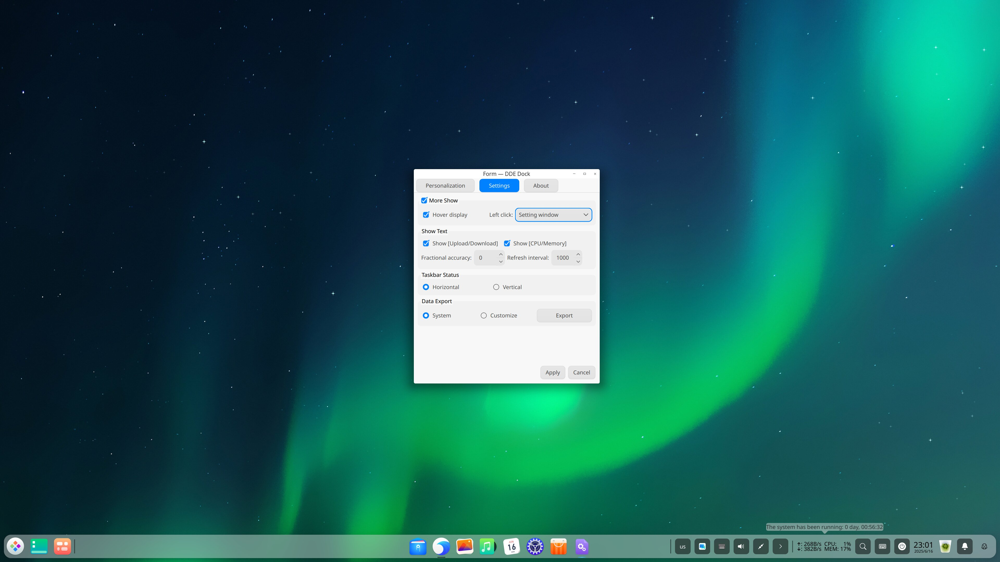
简洁的桌面悬浮插件，显示网速、CPU和内存的占用率信息，支持任意 Linux 发行版，已上架三方星火商城
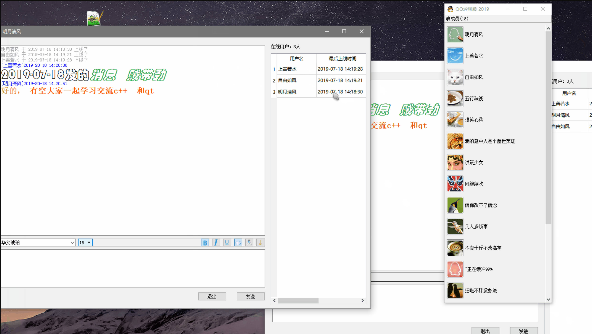
C/C++写的小游戏： 2048、FlappyBird、通讯录、终端 IM、 界面 IM、仿 QQ 轻聊版的简版群聊天